Rajat Sainju
I'm an AI/ML scientist at the Advanced Photon Source at Argonne National Laboratory. I build production LLM systems, including agentic RAG and AI harnesses, that help run a large accelerator facility, and I develop machine learning for accelerators and materials science.
My postdoctoral advisors at Argonne are Dr. Michael Borland and Dr. Yine Sun. I did my Ph.D. in Materials Science and Engineering at UConn with Prof. Yuanyuan Zhu, where I developed deep learning tools, like DefectTrack, that analyze in-situ electron microscopy videos in real time. Before that, I studied Engineering Physics at Ramapo College.
News
New perspective on deploying AI agents in production
at scientific user facilities, drawing on agents running at the APS.
Sep, 2026
Invited by the Argonne Accelerator Institute (AAI) to give a
Beams and Applications Seminar
on AI and ML for accelerator operations.
Apr, 2026
Our study of carbon gasification on a spent Ni/CeO₂ catalyst is out in
ACS Catalysis.
Oct, 2025
Talk at TPC25 in San Jose on augmenting Advanced Photon
Source search with retrieval-augmented generation.
Jul, 2025
Talk on large language model operations for the APS at BISCUIT, the X-ray Science
Division seminar at Argonne. 🍪
Jul, 2025
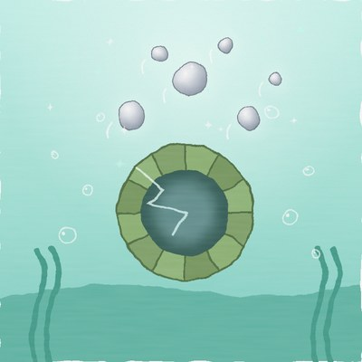
Operando reduction of hollow NiO and Ni redispersion published in
Nano Letters.
Jun, 2025
Tungsten nanofuzz oxidation, seen in situ at atmospheric pressure, published in
Acta Materialia.
Oct, 2024
Named the Spring 2023 Outstanding Graduate Student Speaker in
Materials Science and Engineering at UConn. 🎤
Apr, 2023
DefectTrack featured in Argonne's story
Artificial
intelligence reframes nuclear material studies.
Feb, 2023
DefectTrack, real-time tracking of
defects in in-situ TEM videos, published in Scientific Reports.
Sep, 2022
Won an M&M 2022 Student Scholar
Award for real-time tracking of irradiation defects in in-situ TEM videos. 🏆
Aug, 2022
Single-nanoparticle Ni oxidation, from nucleation to thickening, published in
ACS Nano.
Apr, 2022
Presented deep learning-assisted in-situ ETEM of
nanocatalyst sintering and regeneration
at M&M 2021.
Aug, 2021
Tungsten oxidation watched in situ by environmental TEM, led by Maanas Togaru, published in
Materials Characterization.
Mar, 2021
DefectSegNet featured by the DOE Office of Science:
AI
helps scientists quantify irradiation effects.
Sep, 2020
DefectSegNet made the Scientific Reports
Top 100 in Materials Science of 2019. 🎉
Mar, 2020
DefectSegNet, deep learning
segmentation of defects in steel, published in Scientific Reports.
Sep, 2019
Publications

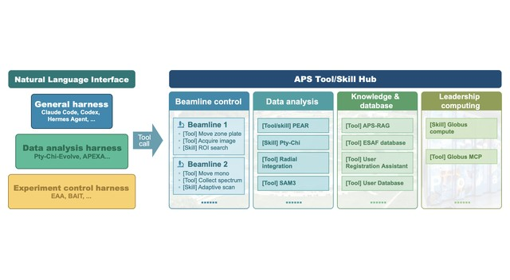
Strategies for Deploying AI Agents in Production at Scientific User Facilities
arXiv 2026
TLDRA perspective, drawn from LLM-driven agents deployed at the APS, on practical strategies for
running agents in production at light sources and other user facilities, from beamline control to
knowledge retrieval and data analysis.

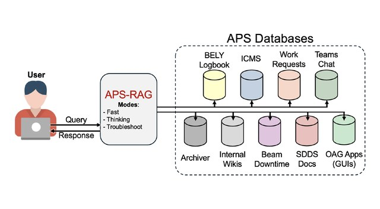
APS-RAG: A Corrective Agentic Hybrid RAG and an Operations-Grounded Evaluation for a Scientific Facility
arXiv 2026
TLDRA deployed platform that lets Advanced Photon Source staff ask plain-language questions over
logbooks, technical documents, work requests, chat and live control-system data, with cited answers.
It fuses dense, keyword and knowledge-graph retrieval with a corrective agentic loop, and is
evaluated on APS-Bench, an operations-grounded benchmark.

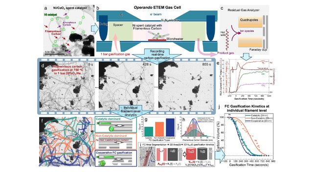
Operando Elucidation of Filamentous Carbon Gasification Kinetics and Mechanisms on a Spent Ni/CeO₂ Catalyst
ACS Catalysis 2025
TLDRWatches a spent Ni/CeO₂ catalyst being regenerated in air inside an environmental TEM and, with
semantic segmentation, separates three ways its carbon filaments burn off: catalytic, noncatalytic
and cooperative. The last two turn out to be more common than expected, and catalytic gasification
is limited by carbon diffusion through Ni(−Cₓ) rather than the usual bulk-diffusion model.

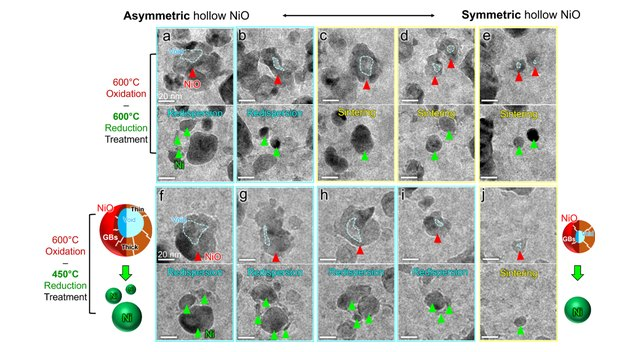
Operando Spatially and Time-Resolved Reduction of Hollow Polycrystalline NiO: How to Promote Ni Nanoparticle Redispersion
Nano Letters 2025
TLDRFollows hollow NiO grains being reduced in an environmental TEM and measures their kinetics with
semantic segmentation. A milder 450 °C reduction slows and desynchronizes neighbouring grains, which
breaks the oxide into more, smaller Ni particles: redispersion needs both a hollow oxide and slow,
asynchronous reduction.

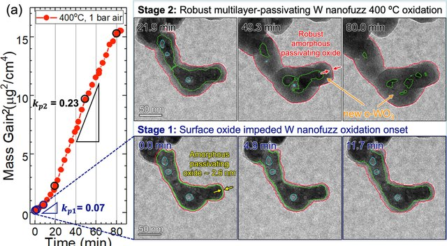
In-situ ETEM Study of Plasma-Facing Tungsten Nanofuzz Oxidation at Atmospheric Pressure: Microstructure Evolution and Substrate-Free Oxidation Kinetics
Acta Materialia 2024
TLDRThe first oxidation kinetics for substrate-free tungsten nanofuzz, measured in 1 bar dry air at
400 and 500 °C inside an environmental TEM. Nanofuzz oxidizes more slowly than bulk W: a durable
amorphous surface oxide, likely promoted by He-plasma surface damage, acts as a passivating layer.

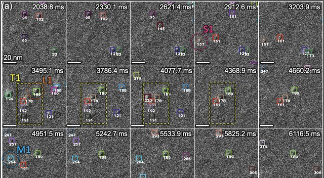
DefectTrack: A Deep Learning-Based Multi-Object Tracking Algorithm for Quantitative Defect Analysis of In-situ TEM Videos in Real-Time
Scientific Reports 2022
TLDRThe first deep-learning multi-object tracker for defect clusters in in-situ irradiation TEM videos.
It reaches a MOTA of 66.4%, runs in real time, and measured defect lifetimes more accurately and
faster than four human experts.

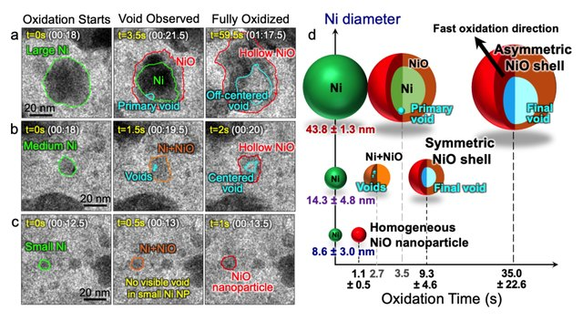
In Situ Studies of Single-Nanoparticle-Level Nickel Thermal Oxidation: From Early Oxide Nucleation to Diffusion-Balanced Oxide Thickening
ACS Nano 2022
TLDRTracks the oxidation of individual 4–50 nm Ni nanoparticles at 600 °C in an environmental TEM. A
two-stage model explains the size dependence: NiO nucleation first, then diffusion-balanced shell
thickening, which in larger particles leaves hollow NiO.

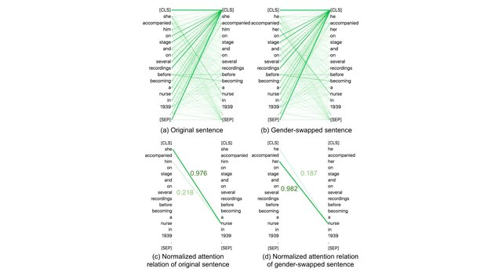
Detecting Gender Bias in Transformer-Based Models: A Case Study on BERT
arXiv 2021
TLDRDetects gender bias in BERT through its attention maps and traces where it comes from: the query
and key matrices add the most bias, and the bias rises and falls periodically through the layers.

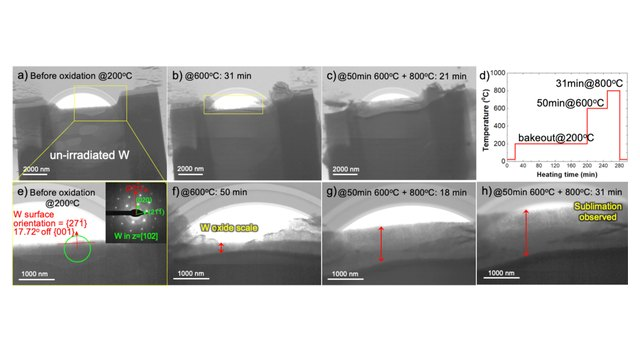
Direct Observation of Tungsten Oxidation Studied by In Situ Environmental TEM
Materials Characterization 2021
TLDRThe first in-situ environmental TEM observation of tungsten thermal oxidation, at 500–900 °C and
1 bar. Both the oxide microstructure and how fast it grows depend strongly on the orientation of the
tungsten surface.

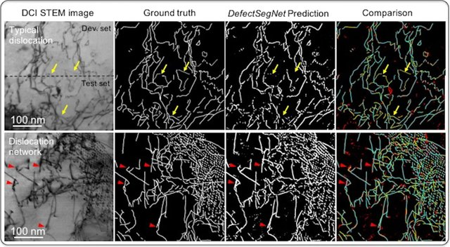
Deep Learning for Semantic Segmentation of Defects in Advanced STEM Images of Steels
Scientific Reports 2019
TLDRDefectSegNet, a CNN that segments dislocations, precipitates and voids in DCI STEM images of
steel, reaching 91.6–98.9% pixel accuracy from a small set of training images. Defect measurements
from its output beat the human-expert average.
Conference Papers

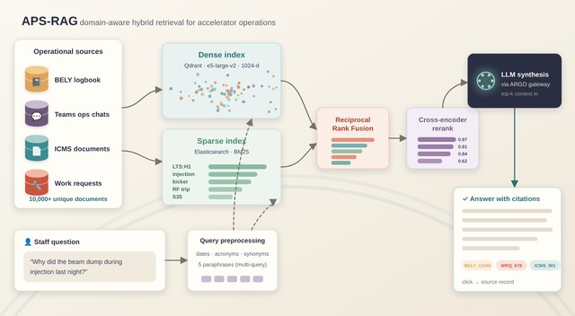
A Domain-Aware Hybrid Retrieval Augmented Generation System for Accelerator Operations and Knowledge Synthesis
IPAC'26
TLDRThe production version of APS-RAG at the Advanced Photon Source: hybrid dense and BM25 retrieval
with reciprocal-rank fusion and cross-encoder reranking over more than 10,000 documents from the
BELY logbook, Teams operations chats, ICMS and work requests, with every answer linked back to its
source records.

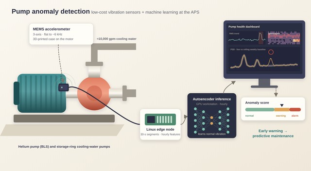
Leveraging Low-Cost Sensors and Machine Learning for Pump Anomaly Detection in Accelerator Facilities
IPAC'26
TLDRLow-cost vibration sensors on a helium pump and storage-ring cooling-water pumps stream data to
Linux edge nodes; an autoencoder flags anomalies every hour and a web dashboard shows trends,
spectrograms and spectra. In the pilot at the APS, rolling weekly baselines and consistent sensor
mounting mattered more than model tweaks.

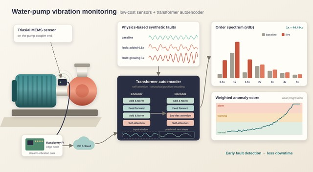
Application of Low-Cost Sensors and Deep Autoencoders for Monitoring Water Pumps in Particle Accelerators
NAPAC 2025
TLDRA low-cost vibration sensor and a Raspberry Pi stream cooling-water pump vibrations to a
transformer autoencoder that learns each pump's normal behaviour and flags anomalies. Trained with
physics-based synthetic faults, it aims to catch pump failures before they cause downtime at the APS.

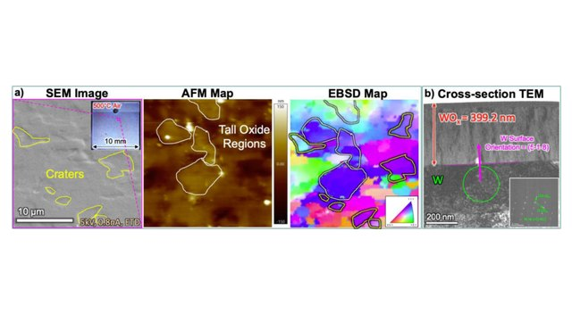
Advanced Ex-situ and In-situ Electron Microscopy Characterization of Fusion Plasma-Facing Tungsten Oxidation
Microscopy & Microanalysis 2025
TLDRCombines SEM, AFM, EBSD and TEM with in-situ ETEM to show that tungsten oxidation depends on grain
orientation, and that He-plasma nanofuzz oxidizes more slowly than bulk W because a durable
amorphous surface oxide passivates it.

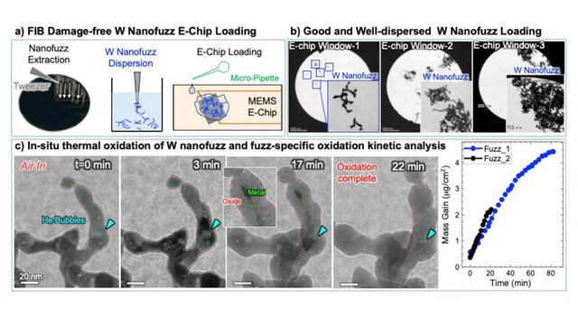
Tracking Metal/Oxide Interface Evolution and Reaction Kinetics of Fusion Energy Nanostructured Tungsten Material Using In Situ ETEM
Microscopy & Microanalysis 2024
TLDRConventional TGA can't separate a 1 µm nanofuzz layer from its 1 mm substrate, so we load single
tungsten nanofuzz tendrils into an environmental TEM and segment metal, oxide and He bubbles to get
the first nanofuzz-specific oxidation kinetics.

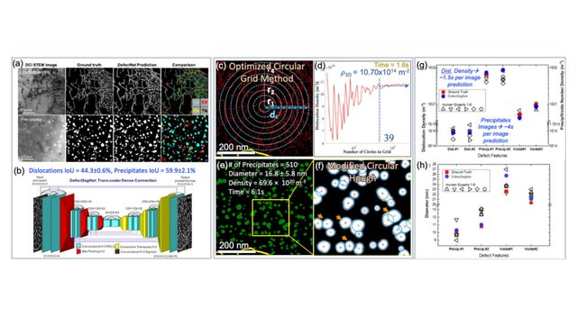
Deep Learning for Automated Quantification of Irradiation Defects in TEM Data: Relating Pixel-level Errors to Defect Properties
Microscopy & Microanalysis 2023
TLDREvaluates DefectSegNet and DefectTrack with the materials-science numbers that matter (defect
density, size and lifetime distributions) alongside standard pixel-level computer-vision metrics,
and studies how the two kinds of metric relate.

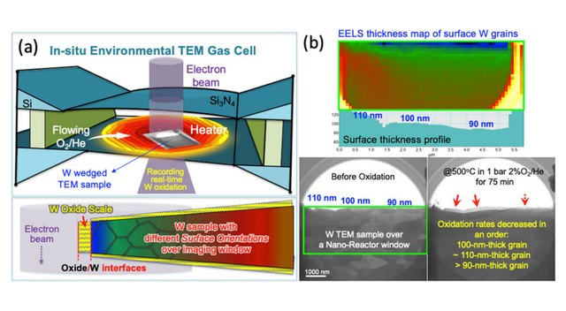
In-situ Thermal Oxidation of Fusion PFM Tungsten Using Atmospheric Environmental TEM
Microscopy & Microanalysis 2023
TLDRIn-situ ETEM oxidation of pristine and ion-irradiated fusion-grade tungsten at up to 1 bar.
Thinner grains in the TEM foil did not oxidize faster, and in-situ diffraction caught the
high-temperature orthorhombic WO₃ that post-mortem studies miss.

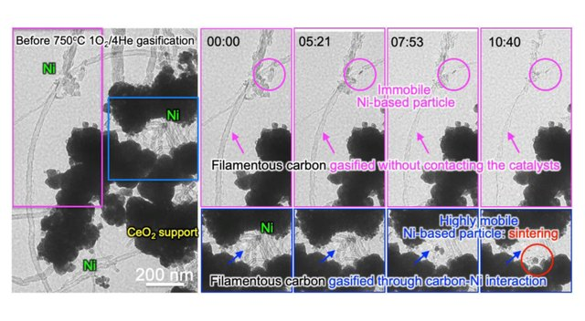
In-situ ETEM Observation of Competing Mechanisms for Filamentous Carbon Gasification
Microscopy & Microanalysis 2023
TLDRWatching carbon filaments burn off a spent Ni-W/CeO₂ catalyst at 750 °C shows that carbon can
gasify even without touching the catalyst, so several competing mechanisms are at play during
catalyst regeneration.

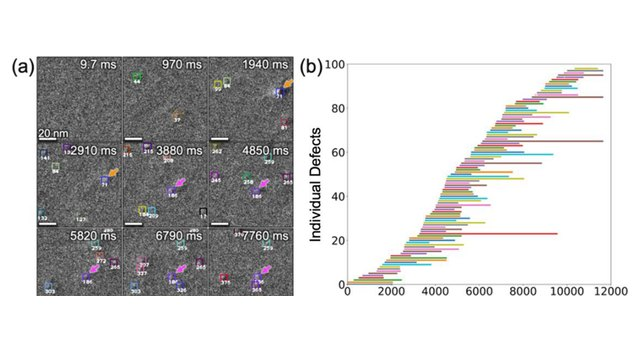
Real-time Multi-Object Tracking of Ion-irradiation Induced Defects in in situ TEM Videos
Microscopy & Microanalysis 2022
TLDRDefectTrack follows ion-irradiation defect clusters at 28 frames per second. Compared with human
experts it is about 100 times faster and analyzes 25 times more defect clusters, with a lifetime
distribution that matches the ground truth.

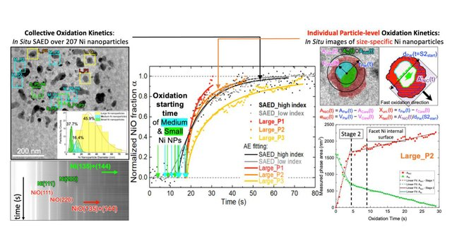
Beyond In Situ ETEM Imaging: Unveiling the Size-dependent Oxidation Mechanism of Metallic Nanoparticles by Individual Nanoparticle-level Oxidation Kinetic Analysis
Microscopy & Microanalysis 2022
TLDRCompares collective and single-particle oxidation kinetics for 207 Ni nanoparticles, and shows
that averaging over particles of different sizes can skew which kinetic model appears to fit.

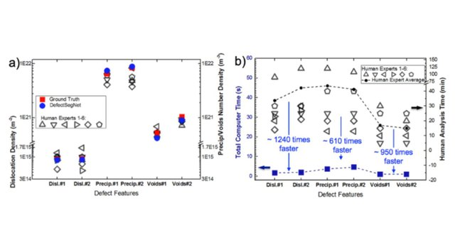
Deep Learning-based Computer Vision for Radiation Defect Analysis: from Static Defect Segmentation to Dynamic Defect Tracking
Microscopy & Microanalysis 2021
TLDRTwo studies: DefectSegNet quantifies static radiation defects in seconds, more reproducibly than
human experts, and an annotation pipeline for in-situ TEM videos lays the groundwork for tracking how
defect clusters evolve during irradiation.

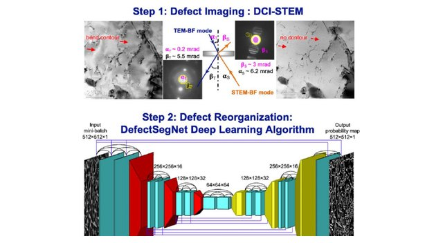
Towards an End-to-end Radiation Defect Quantitative Characterization Workflow Using Advanced Microscopy Images
Microscopy & Microanalysis 2020
TLDRAn end-to-end workflow for radiation-defect analysis: DCI STEM imaging, DefectSegNet segmentation
and DefectQuant measurement. It is accurate, reproducible and at least two orders of magnitude faster
than human experts.

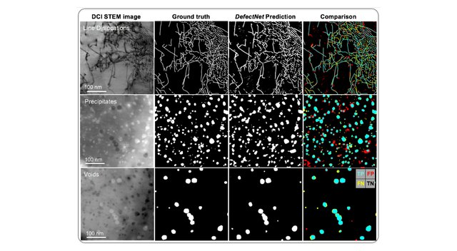
DefectNet – A Deep Convolutional Neural Network for Semantic Segmentation of Crystallographic Defects in Advanced Microscopy Images
Microscopy & Microanalysis 2019
TLDRThe first version of DefectSegNet: a CNN that segments dislocations, precipitates and voids in
DCI STEM images, reaching 94.6% average pixel accuracy from a small labelled set.

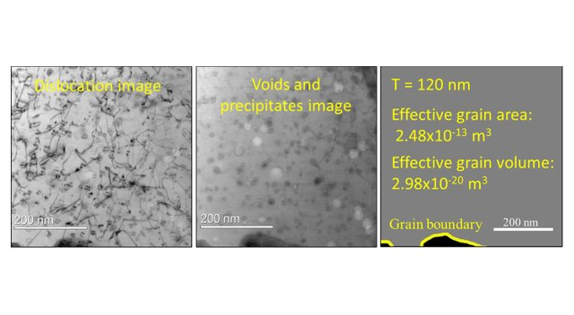
Automated Quantitative Analysis of Extended Irradiation Defects: Dislocations, Voids and Precipitates in Neutron Irradiated HT-9 Steel
Microscopy & Microanalysis 2019
TLDRMATLAB algorithms that automatically measure dislocation density (an optimized circular-grid
method) and void and precipitate sizes (a modified Hough transform that separates overlapping
particles) in neutron-irradiated HT-9 steel.
More abstracts
Software
rajatsainju2025/aps-rag
Framework
🔎 Corrective agentic hybrid RAG for facility knowledge
🎯 Real-time tracking of defects in in-situ TEM videos
🧩 Semantic segmentation of defects in STEM images of steel
rajatsainju2025/ml-tutorial
Tutorial
📚 Beginner-friendly notebooks that build core ML step by step
📈 Can LightGBM beat HAR and GARCH at forecasting SPY volatility?